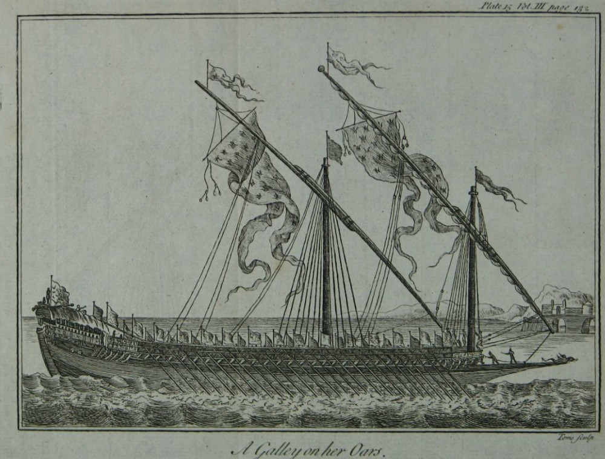
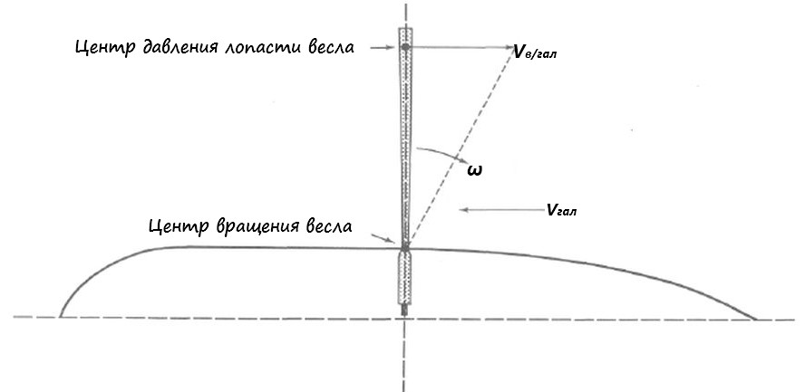
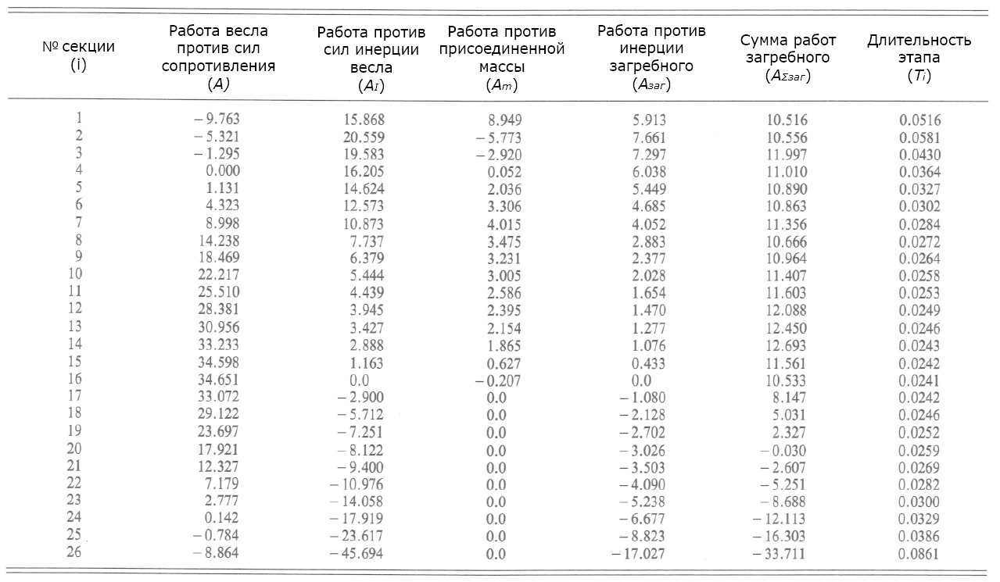

Весло
Они нагибаются сразу
И весла заносят вдруг.
В. А. Луговской. Клинкер

Галера на веслах
После предварительных замечаний, которые мы сделали прошлый раз, перейдем к вычислению сопротивления движению лопасти весла в воде по уравнению (**). Повторим его
Rвгидр =½ ρ·Sл· Свгидр· Vвесл2
Вычисления мы должны проводить для каждой секции i, на которую разбит весь путь весла в воде.
Площадь погруженной части лопасти Sлi равна произведению ее ширины Cd или хорды (хорда в аэро- и гидродинамике — отрезок прямой, соединяющей две наиболее удаленные друг от друга точки профиля), которая остается постоянной, на длину погруженной части Lлi, величина которой меняется в ходе гребка: Sлi = Cd × Lлi.
Далее определимся с величиной скорости весла в воде Vвесл. Согласно закону о сложении скоростей скорость весла относительно воды равна векторной сумме скоростей весла относительно галеры и скорости галеры. Так как эти векторы направлены в противоположные стороны, то
Vвеслi = Vв/галi – Vгал

ω – угловая скорость весла относительно галеры
Vв/гал – линейная скорость лопасти весла относительно галеры
Vгал – скорость галеры относительно воды
Скорость галеры берем из исходных данных. Найдем скорость весла относительно корабля Vв/гал. Так как весло описывает дугу окружности вокруг центра вращения – уключины, то линейная скорость кромки лопасти будет равна произведению угловой скорости весла на расстояние между центром вращения и кромкой лопасти. Значения последних двух параметров известны и приведены ранее. Все значения переменных величин берем средними по длине секции. Вместо длины весла от уключины до кромки лопасти используем длину от уключины до центра давления лопасти, в той же точке вычисляем скорость весла относительно галеры. В результате получаем 26 значений величины сопротивления движению лопасти весла в воде для 26 секций.
Умножив величину этой силы сопротивления на путь, проходимый центром давления лопасти (последний легко получить из закона пропорциональности из пути, проходимого кромкой весла), получим работу, необходимую для преодоления гидродинамического сопротивления для каждой секции Аiвесл. Сложив по всем секциям, окончательно получим значение работы для весла Авесл, необходимое для движения с заданной скоростью. В идеале это значение должно совпасть со значением, вычисленным в предпоследнем посте. Однако если тщательно выполнить все указанные выше процедуры, получается значение Авесл = 261,9 джоулей , что отличается от найденного раньше значения (356,9 дж). Скорее всего погрешность возникла в ходе использования нашего метода проб и ошибок в установлении коэффициента угловой скорости весла ω. Введем поправочный коэффициент K = 1,0313 к угловой скорости для наших значений скорости (5 узлов) и темпа гребли (21 гребок/мин), что позволит, используя взвешенные с этим коэффициентом значения, свести все концы с концами и использовать полученную модель для дальнейших расчетов.
Но не радуйтесь раньше времени, это далеко не всё. Нам надо еще оценить значение дополнительной работы, которая не затрачивается напрямую на продвижение галеры, но является сопутствующим элементом, приводящим к дополнительны нагрузкам на гребцов и истощающим их силы. Первой рассмотрим работу, затрачиваемую на преодоление момента инерции весла. Весло, естественно, обладает некоторой инерцией, которую требуется преодолеть, чтобы привести его в движение. Момент инерции измеряется в м2×кг, для нашего весла мы присвоили ему обозначение IR. Если весло имеет угловую скорость ω, то при движении оно приобретает кинетическую энергию вращения
½ · IR ·ω2
На начальном этапе гребка угловая скорость весла растет, а так как приобретаемая веслом энергия на каждом этапе равна
½ · IR ·(ω22 – ω12),
где ω2, ω1 – угловые скорости в конце и в начале этапа. Весло приобретает, накапливает энергию. На конечном этапе картина меняется, энергия меняет знак с положительного на отрицательный, весло отдает энергию. Эту картину мы можем видеть в приведенной ниже таблице, когда энергия инерции весла постепенно уменьшается до 16-й секции, где она становится равной нулю, после чего меняет знак.
Еще одной «дополнительной» работой является работа против гидродинамической силы, вызванной сопротивлением присоединенной массы воды. Коротко природу этого сопротивления можно объяснить так: вследствие наличия сил вязкость весло при своем движении выводит из состояния покоя прилегающие к нему частицы жидкости, а те – соседние с ними частицы и т.д. Таким образом, жидкость в некотором объеме W приходит в движение. Следовательно, часть энергии, прикладываемой к веслу извне расходуется не только на преодоление инерции самого весла, но и на изменение кинетической энергии в жидком объеме W. Мы не будем здесь приводить всю последовательность вычислений работы по преодолению инерции присоединенной массы, ввиду того, что удельный вес этой работы в общем значении работы гребцов невелик. Желающие могут познакомиться с этим процессом здесь.
Добавив рассмотренные дополнительные работы к работе против сил гидродинамического сопротивления движению галеры, получим «реальную» работу, рассчитанную со стороны весла, для каждого элементарного перемещения весла.
Сведем полученные данные в таблицу
Таблица
Работа одиночного гребца на этапе проводки весла в воде

В этой таблице учтена также энергия, затраченная на противодействие инерции самого гребца, но о ней мы поговорим в следующий раз, когда речь пойдет о закономерностях, связанных с этой работой.